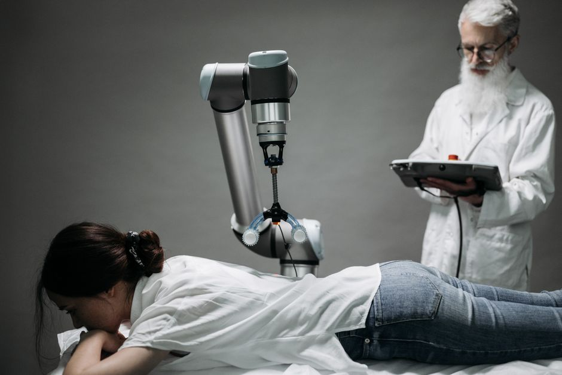

Imagine a future where robots aren't just factory workers or toy companions, but vital members of our healthcare teams, assisting doctors, comforting patients, and even performing intricate surgeries with superhuman precision. This isn't science fiction anymore; it's the rapidly unfolding reality of medical robotics. From tiny instruments navigating our bodies to intelligent machines helping us recover, robots are revolutionizing medicine, promising a healthier, more efficient, and perhaps even a longer future for all of us. Let's explore how these incredible machines are transforming hospitals, clinics, and lives right here in India and across the globe.
The Operating Room's New Best Friend: Surgical Robots
For centuries, surgery relied solely on human hands, skill, and judgment. While human surgeons are incredibly talented, their movements can be limited by natural tremors or the physical constraints of operating in tight spaces. Enter surgical robots – systems designed to augment a surgeon's abilities, offering unparalleled precision, control, and visualization.
The Da Vinci Surgical System: A Pioneer
When most people think of surgical robots, the da Vinci Surgical System often comes to mind. It's a marvel of engineering that has been a game-changer in minimally invasive surgery. But how does it work?
- Master-Slave System: The surgeon sits at a console, viewing a high-definition, 3D image of the surgical site. Their hands and feet control robotic arms that hold tiny surgical instruments and a camera.
- Enhanced Dexterity: The robot's "wrists" can rotate far more than a human wrist, allowing for movements in tight spaces that would otherwise be impossible.
- Tremor Filtration: Any natural hand tremors from the surgeon are filtered out by the robot, resulting in incredibly steady and precise movements.
- Smaller Incisions: Because the instruments are tiny, surgeons can perform complex procedures through much smaller cuts, leading to less pain, reduced blood loss, shorter hospital stays, and faster recovery times for patients.
The da Vinci system is widely used for procedures in urology, gynecology, general surgery, and more, making complex operations safer and more accessible.
Beyond Da Vinci: The Evolving Landscape
While da Vinci is a prominent example, the field of surgical robotics is vast and growing. Other specialized robots are emerging:
- Orthopedic Robots: Systems like Mako and ROSA assist surgeons in precise bone cutting and implant placement for knee and hip replacements.
- Neurosurgical Robots: Robots help navigate delicate brain tissue for biopsies or tumor removal with extreme accuracy.
- Endoscopic Robots: Tiny robots can travel inside the body through natural openings, performing diagnostics or minor interventions.
The future of surgical robots includes greater autonomy (under human supervision, of course!), haptic feedback (allowing surgeons to "feel" what the robot feels), and integration with Artificial Intelligence for enhanced decision-making and real-time guidance.
Robots Beyond Surgery: Healing and Helping
The impact of robotics in medicine extends far beyond the operating theatre. Robots are becoming invaluable assistants in rehabilitation, logistics, diagnostics, and even patient care.
Rehabilitation Robots: Regaining Movement
Imagine losing the ability to walk or use your arm after an injury or stroke. Rehabilitation robots are designed to help patients regain strength, coordination, and mobility. These can range from:
- Exoskeletons: Wearable robotic suits that help patients with spinal cord injuries or severe weakness stand and walk.
- Gait Trainers: Robots that guide a patient's legs through natural walking patterns, providing repetitive and consistent therapy.
- Arm and Hand Trainers: Devices that help patients perform exercises to improve fine motor skills and range of motion.
These robots offer intensive, personalized therapy, often tracking progress with data, which can motivate patients and provide therapists with valuable insights.
Pharmacy and Logistics Robots: The Unsung Heroes
While less glamorous, robots play a crucial role behind the scenes in hospitals and pharmacies, ensuring efficiency and safety.
- Pharmacy Automation: Robots can accurately dispense medications, manage inventory, and package prescriptions, reducing human error and freeing up pharmacists for more patient-focused tasks.
- Hospital Logistics: Autonomous mobile robots (AMRs) transport food, laundry, medical supplies, and even laboratory samples throughout large hospital complexes, improving efficiency and reducing staff workload.
Diagnostic and Therapeutic Robots: New Frontiers
Robots are also pushing boundaries in how we diagnose and treat illnesses:
- Capsule Endoscopes: Tiny, swallowable cameras that travel through the digestive tract, capturing images to help diagnose conditions without invasive procedures.
- Telepresence Robots: Robots equipped with screens and cameras allow doctors to consult with patients in remote locations, providing expert care where specialists might not be physically present.
- Targeted Drug Delivery: Micro-robots are being researched to deliver drugs precisely to diseased cells, minimizing side effects on healthy tissues.
"The true power of medical robotics isn't about replacing humans, but about empowering them. It's about giving doctors superpowers and patients faster paths to recovery."
— A leading robotics researcher at MakerWorks
The STEM Connection: Why This Matters for You
The world of medical robotics is a vibrant intersection of various STEM fields. If you're fascinated by how things work, love solving problems, or dream of making a real difference in people's lives, this field is brimming with opportunities:
- Robotics Engineering: Designing the mechanical structures, motors, and sensors.
- Computer Science & AI: Developing the software, algorithms, and artificial intelligence that control these complex machines.
- Electronics Engineering: Crafting the circuits and control systems.
- Biomedical Engineering: Understanding the human body and how technology can interface with it safely and effectively.
- Data Science: Analyzing the vast amounts of data generated by medical robots to improve performance and patient outcomes.
Even a simple conceptual look at how a robot might make a decision in a medical setting involves programming logic:
# Conceptual Python-like code for a rehabilitation robot arm
def monitor_patient_progress(sensor_data):
# Check if patient is within safe limits and making progress
if sensor_data['joint_angle'] <= patient_goal['min_angle'] and \
sensor_data['force_applied'] < patient_goal['max_force']:
return "Continue_Exercise_Level_1"
elif sensor_data['joint_angle'] > patient_goal['target_angle'] and \
sensor_data['force_applied'] > patient_goal['min_force_for_next_level']:
return "Suggest_Increase_Exercise_Level"
else:
return "Maintain_Current_Exercise"
# Example usage with simulated data
patient_vitals = {
'joint_angle': 45, # degrees
'force_applied': 15, # Newtons
'heart_rate': 80 # beats per minute
}
patient_therapy_goals = {
'min_angle': 30,
'target_angle': 60,
'max_force': 20,
'min_force_for_next_level': 10
}
decision = monitor_patient_progress(patient_vitals)
print(f"Robot's action suggestion: {decision}")
This simple example shows how sensors collect data, and software uses that data to make informed decisions, which is fundamental to how medical robots operate.
Challenges and Ethical Considerations
While the benefits are immense, the integration of robots into healthcare isn't without its challenges:
- Cost: Medical robots are expensive to purchase, operate, and maintain, making them less accessible in developing regions.
- Training: Surgeons and medical staff require extensive training to operate these complex systems effectively and safely.
- Safety & Reliability: Ensuring that robots are absolutely safe and reliable, with robust fail-safes, is paramount.
- Ethical Dilemmas: Questions around accountability in case of errors, data privacy, and the balance between automation and the human touch in patient care need careful consideration.
- Accessibility in India: While adoption is growing, wider access across all tiers of healthcare in India remains a goal.
Conclusion
Surgical and medical robots are not just tools; they are partners in our quest for better health. From performing delicate surgeries with incredible precision to helping patients walk again, these machines are redefining the possibilities of medicine. For young minds in India, this field represents an exciting frontier. The next generation of innovators, engineers, and problem-solvers will be the ones to further integrate these technologies, making healthcare more accessible, efficient, and humane.
Are you ready to be part of this revolution? Explore the fascinating world of robotics, dive into programming, and unleash your creativity. Who knows, your ideas might just shape the future of medicine! Visit MakerWorks to learn more, join our workshops, and start building your own path in STEM today!